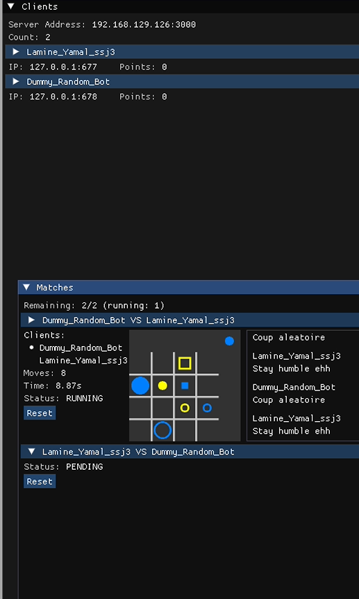
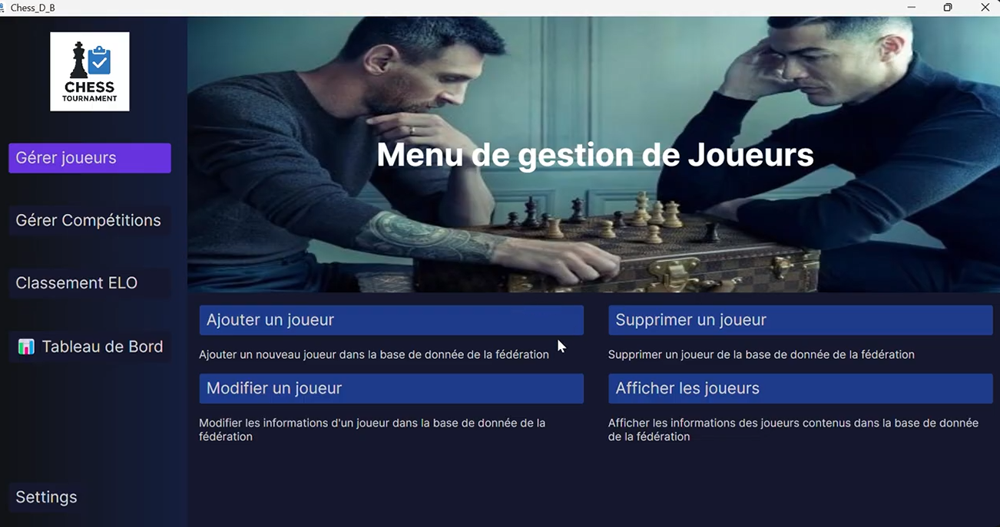
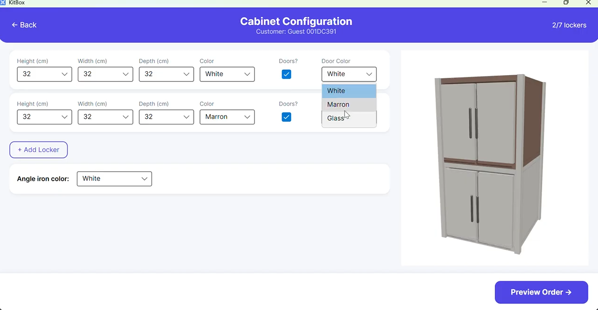
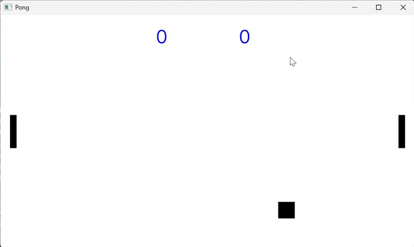
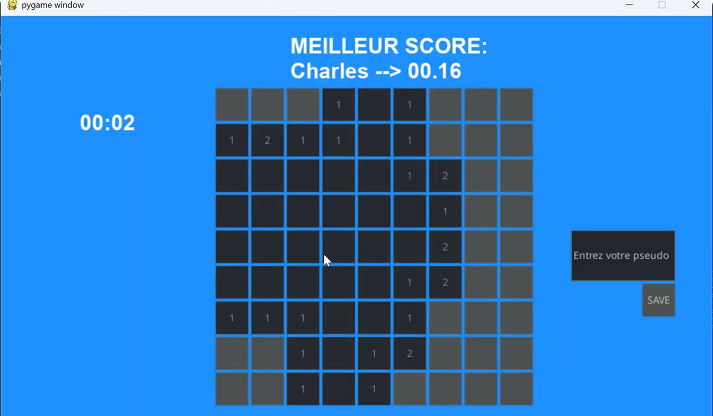
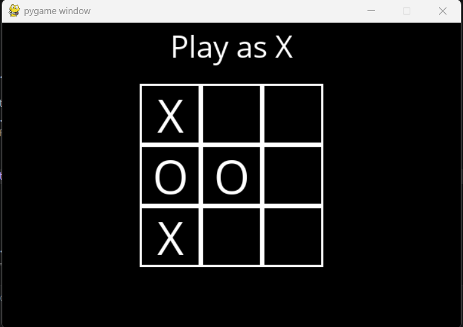

Self-taught and passionate engineering student, I build innovative systems that bridge the hardware and software worlds. From an Quarto AI using Minimax with Alpha-Beta pruning to embedded systems and full-stack applications, I love tackling complex architectural challenges across Embedded Systems, Software, AI, and Data Engineering.
ECAM, Brussels, Belgium
Master 1 in Industrial Engineering, Computer Science (2026 - Present)
Python • C# • C/C++ • JavaScript • SQL (SQLite, MariaDB) • Bash • React • Node.js • Avalonia UI • FastAPI • Pandas • NumPy • Matplotlib • TensorFlow • Scikit-learn • OpenCV • Git • Docker • Arduino • Altium Designer • LTSpice
CS50 Python, Harvard University
CS50 AI, Harvard University
• Bachelor's Degree obtained with Distinction
•
Volunteer developer for the open-source project OpenBikeSensor (Avello)
•
Math, Physics & CS mentor (ALMA Academy)

An unbeatable AI for the board game Quarto, combining Minimax with Alpha-Beta pruning and socket-based networking for smooth multiplayer play.
Review Project
A C# (Avalonia UI) management system for a chess federation, handling players, tournaments, and rankings.
Review Project
A C# desktop application used in store to configure modular cabinets, validate orders, and manage stock and supplier purchasing.
Review Project
A 2D Ping Pong game built in C# with the Avalonia UI framework.
Review Project
A recreation of the classic Minesweeper game in Python using Pygame, with procedural grid generation and mine detection.
Review Project
A Tic-Tac-Toe game against an AI implementing the Minimax algorithm for an unbeatable opponent.
Review ProjectA breadth-first search algorithm that computes the degree of separation between two actors.
Review ProjectECAM Engineering Consult
Aug 2025 – Present · Brussels, Belgium
Managed the data-collection and training pipeline for an image-analysis model built to detect defects in glass manufacturing.
Eco PBC
Mar 2026 – Present · Namur, Belgium
Reverse-engineered an existing software architecture to provide technical support, and built a full, scalable Android application in Java with Android Studio.
Neurogreen
Apr – May 2026 · Mons, Belgium
Designed the backend and deployed an internal web app on a Raspberry Pi for component stock management and project tracking, and optimized a data pipeline to improve data quality feeding a computer-vision model.